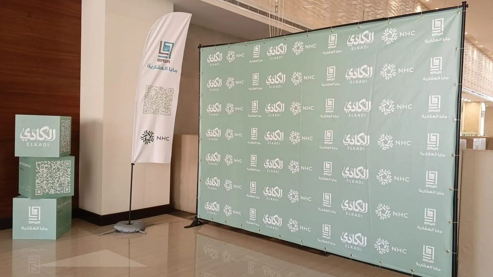

اللوحات والحروف المضيئة
واجهات ولوحات إعلانية وحروف مضيئة للمحال والمنشآت، بحسب المقاسات والموقع.
طباعة ولوحات ودعاية وإعلان / جازان
مطبوعات ولوحات إعلانية وحروف مضيئة في جازان. من واجهة المتجر إلى تجهيز المعرض، تُترجم الفكرة إلى حضور واضح.


لوحات، مطبوعات،
وتجهيزات تُرى.
الخدمات والتفاصيل
أجمل فكرة للدعاية والإعلان في مدينة جازان. ينفّذ النشاط المطبوعات واللوحات والحروف المضيئة وتجهيزات المعارض. يجمع هذا المعرض أمثلة منشورة لأعماله في مواقع تجارية وفعاليات.
واجهات ولوحات إعلانية وحروف مضيئة للمحال والمنشآت، بحسب المقاسات والموقع.
مطبوعات دعائية واستيكرات وبنرات، مع تحديد الاستخدام والكمية والخامة المطلوبة.
استاندات وبوكسات عرض وتجهيزات للافتتاحات والمعارض والفعاليات.
المعرض
نماذج مختارة من صور النشاط المنشورة. اختر التصنيف وافتح الصورة لمشاهدة التفاصيل.
8 صور في المعرض
بداية أوضح
جهّز هذه المعلومات لتبدأ المحادثة مع الفريق بصورة واضحة عن احتياجك.
قبل التواصل
نوع العمل والمقاس والعدد ومكان التركيب والموعد المطلوب. يمكن إرسال الهوية أو التصميم في واتساب بعد بدء المحادثة.
المعرض يعرض صورًا منشورة عبر حساب النشاط للوحات وتجهيزات منفّذة؛ كل طلب جديد يحتاج مراجعة متطلباته ومقاساته.
اختر الخدمة وأضف التفاصيل التي تساعد الفريق على فهم طلبك. ستظهر لك رسالة جاهزة للمراجعة قبل فتح واتساب.
جازان، طريق المطار
+966508317574